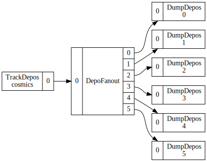

Pgrapher Execution Engine
The Wire Cell Toolkit is based on functional components which can be used as arbitrary "tools" (in the Gaudi sense of the word). But, they can also composed together following the paradigm of data flow programming (DFP). Each component thus becomes a node (aka "vertex") in a graph joined to other nodes via edges that represent the transfer of data from an output port of one to the input port of the other. A new way to perform this execution has been added to WCT in the form of the Pgrapher app.
There are many ways to execute a DFP graph. In a multi-processing context the execution policy should be such that all available cores are utilized. Many active nodes means many edges buffering data. With enough system memory to match the number of cores, this can work well.
However, Pgrapher targets a single-threaded context. There, reducing the amount of data "in flight" so as to minimize system memory usage becomes more important. To do this, Pgrapher implements an execution policy which prioritizes topologically downstream nodes. If the furthest downstream no can not execute because it is starved of data, then the next upstream node will be executed, etc. When a node produces any data, Pgrapher starts again at the "bottom" of the graph. Conceptually, this can be visualized as an individual wave or pulse of data pulsing through the graph.
Configuration Example
Configuring the Pgrapher consist of simply giving a list of edges where each edge names a node and an input or output port number if more than one is available. A Pgrapher graph must be complete in that all input and output ports of all nodes must be connected.
Below is an example Jsonnet snippet that sets up a source which feeds a 2-up fanout which goes on to feed one sink for each output.
// Define individual competent nodes
local source = ...;
local fanout = ...;
local sink1 = ...;
local sink2 = ...;
// Edges are a list of edges expressed as tail->head node identifiers and optional ports
local edges = [
{
tail: { node: wc.tn(source) },
head: { node: wc.tn(fanout) },
},
{
tail: { node: wc.tn(fanout), port: 0 },
head: { node: wc.tn(sink2) }
},
{
tail: { node: wc.tn(fanout), port: 2 },
head: { node: wc.tn(sink2) }
}
];
local app = {
type: "Pgrapher",
data: {
edges: edges,
}
};
[source, fanout, sink1, sink2, app]
The test_fanout.jsonnet test sets up the following DFP graph

This configuration can be exercised in the usual way:
$ wire-cell -c pgraph/test/test_fanout.jsonnet ... WCT: executing app: Pgrapher Pgraph::Graph executing with 8 nodes Depo: (0xdcb200) t=0 q=-5000 r=(100 0 0) n=0 Depo: (0xdcb200) t=0 q=-5000 r=(100 0 0) n=0 Depo: (0xdcb200) t=0 q=-5000 r=(100 0 0) n=0 Depo: (0xdcb200) t=0 q=-5000 r=(100 0 0) n=0 Depo: (0xdcb200) t=0 q=-5000 r=(100 0 0) n=0 Depo: (0xdcb200) t=0 q=-5000 r=(100 0 0) n=0 Depo: (0x13c2290) t=0.00333564 q=-5000 r=(101 0 0) n=1 Depo: (0x13c2290) t=0.00333564 q=-5000 r=(101 0 0) n=1 Depo: (0x13c2290) t=0.00333564 q=-5000 r=(101 0 0) n=1 Depo: (0x13c2290) t=0.00333564 q=-5000 r=(101 0 0) n=1 Depo: (0x13c2290) t=0.00333564 q=-5000 r=(101 0 0) n=1 Depo: (0x13c2290) t=0.00333564 q=-5000 r=(101 0 0) n=1 ...
Each depo gets printed each of the six DumpDepos nodes.